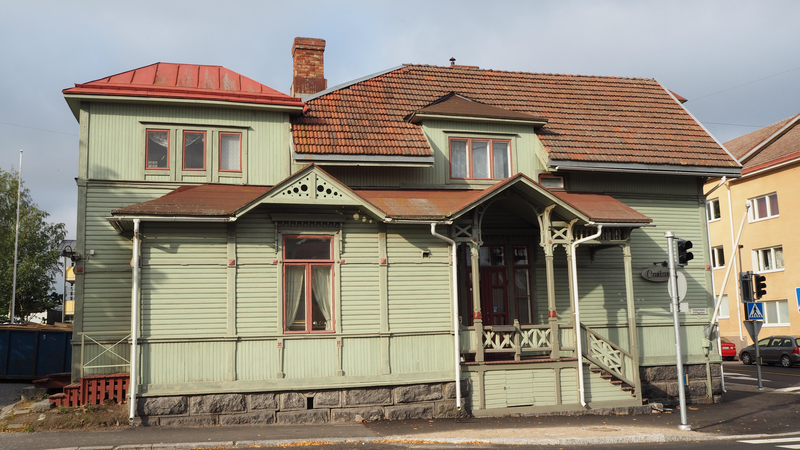
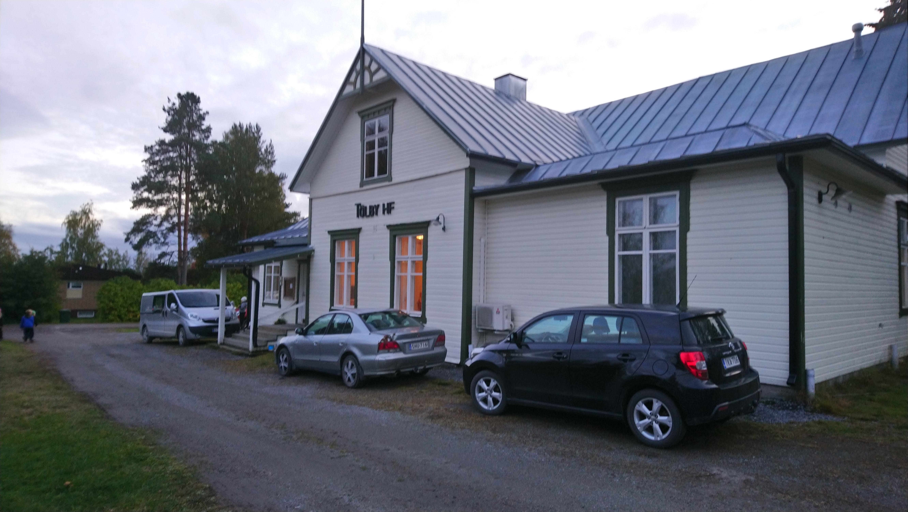
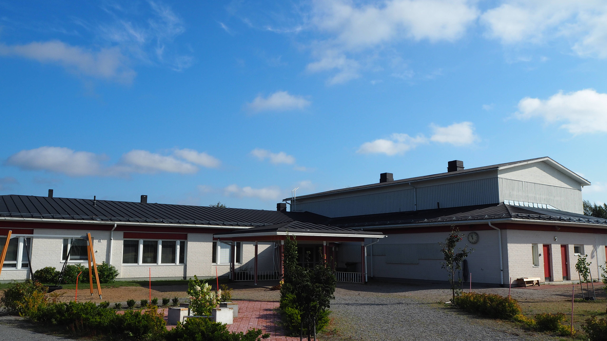
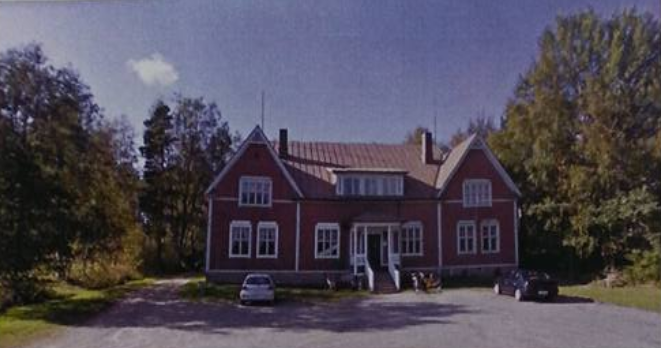

Alla grupper som presenteras här har olika profiler, vi har grupper som arbetar med projekt, grupper för barn, grupper för äldre eller för oerfarna dansare. Tag gärna kontakt med oss om du vill veta mera.
Silverspännet
Silverspännet är en experimentgrupp, vi lär ut nybörjare, polskor från hela norden och dansar krävande program till popmusik. Vi välkomnar alla som vill lära sig och utvecklas. Vi har inte egna par så kom ensam eller tillsammans.
Vi tipsar om skor och annat man kan behöva men uppträder sällan i folkdräkt. Lättast att få kontakt med oss är via vår grupp i Facebook. Vår verksamhet är gratis men vill du vara med i Arbetets Vänenr så betalar du medlemsavgift.
Plats: Arbetets Vänner, Vasa
Tid: Torsdag (2019) kl.18:00-19:00
Ledare: Anna Sundback, Magnus Sundfors
Webb: Silverspännet på Facebook
Plats: Arbetets Vänner, Vasa
Tid: Torsdag (2019) kl.18:00-19:00
Ledare: Anna Sundback, Magnus Sundfors
Webb: Silverspännet på Facebook
Brage folkdanslag

Vill du göra mer än dansa med ett glatt gäng? Inom ramen för Brage i Vasa dansar en glad grupp. Brage uppträder med jämna mellanrum på Bragegården och hjälper även till som frivilliga.
Plats: Cantare, Vasa
Tid: Onsdag kl. 19:00-20:30
Ledare: Britta Lund
Webb: Föreningen Brage i Vasa
Plats: Cantare, Vasa
Tid: Onsdag kl. 19:00-20:30
Ledare: Britta Lund
Webb: Föreningen Brage i Vasa
Solf folkdanslag

Det fnissiga laget där de flesta har börjat dansa som vuxna. Laget välkomnar alla som bara vill dansa. Dansarna skrattar och dansar ibland med sina standardpartner och ibland med någon annan.
Ett par uppträdande i året blir det. De senaste åren ha laget dansat varannan vecka så laget passar dig som endera arbetar skift eller tycker om variation. Anmälan sker via Korsholms vuxenistitut.
Plats: Tölby HF, Korsholm
Tid: varannan måndag kl.19:00
Ledare: Annina Ylikoski
Webb:
Plats: Tölby HF, Korsholm
Tid: varannan måndag kl.19:00
Ledare: Annina Ylikoski
Webb:
Arbetets vänners folkdans
Hösten 2019 kommer laget troligen att förändras mycket. Vi kommer att vara ett nybörjarlag som under hösten dansar pardanser. Vi lär ut vals, schottis, polka, mazurka och andra danser vi kommer på eller deltagarna önskar.
Inom Arbetes Vänner fungerar verksamheten så att man får vara med och dansa gratis men vill man får man vara medlem i föreningen. Är man medlem kan man få understöd när gruppen är ute och reser, vilket sker ibland.
Plats: Arbetets Vänner, Vasa
Tid: tordagar kl.19:00-20:30, måndagar
Ledare: Anna Sundback, Magnus Sundfors
Webb: se Silverspännet
Plats: Arbetets Vänner, Vasa
Tid: tordagar kl.19:00-20:30, måndagar
Ledare: Anna Sundback, Magnus Sundfors
Webb: se Silverspännet
Vörå folkdanslag

Vi som ”dansar i lag” samlar dansare från Vörå med omnejd. Ett glatt gäng som trivs med att motionera kropp och knopp i dansens tecken.
Vi tycker om att dansa traditionella danser som också kallas folkdans. Det betyder allt från pardanser som, schottis, polka, mazurka, vals, salongdanser till formationsdanser som kadriljer och menuetter.
Detta varvar vi med lite sällskapsdanser av modernare inslag. I mån av möjlighet deltar vi i de större sammankomsterna inom Svensk Finland och Norden (på sommaren). Uppträdanden har vi sällan. Folkdräkt eller att uppträda inget tvång. Van eller ovan, ung eller gammal alla har rum med.
Ta kontakt, eller anmäl vi Vörå MI. Vi har i allmänhet 10 övningar per termin på söndag kvällar i Karvsor skola.
Plats: Karvsor skola, Vörå
Tid: Valda söndagar, kl. 18.00 - 20.15.
Ledare: Gösta Småros, tfn 044-3808006
Plats: Karvsor skola, Vörå
Tid: Valda söndagar, kl. 18.00 - 20.15.
Ledare: Gösta Småros, tfn 044-3808006
Folkdans i Jakobstadsnejden

Presentation kommer.
Plats: Vestersundsby UF, Jakobstad
Tid:
Kontakt:
Webb: Vestersundsby folkdanslag
Plats: Vestersundsby UF, Jakobstad
Tid:
Kontakt:
Webb: Vestersundsby folkdanslag